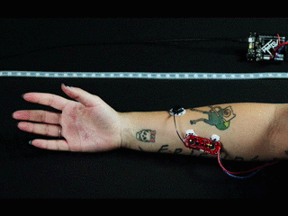

Course project for UCSD's CSE291H Healthcare Robotics. Team of 2. Spring 2017.
Works
Designed a golve intended to help people with hand/wrist injueries to carry out hand therapies in a home setting
Integrated gyroscope, EMG sensor and touch sensor with an Arduino Uno
Implemented user interface and communication between Arduino and laptop using Processing 3
Sensors
Used some sensors that I have never used before. So I think it might be interesting to introduce them here.
The first one is called EMG(electromyogram) sensor. This sensor can sense the electrical activity of the muscle. We used it in the project to sense if the user is gripping.

Touch sensor. I knew there are force sensitive resistors, but I didn't expect them to be this thin. And turns out it is pretty good at sensing force applied on it.